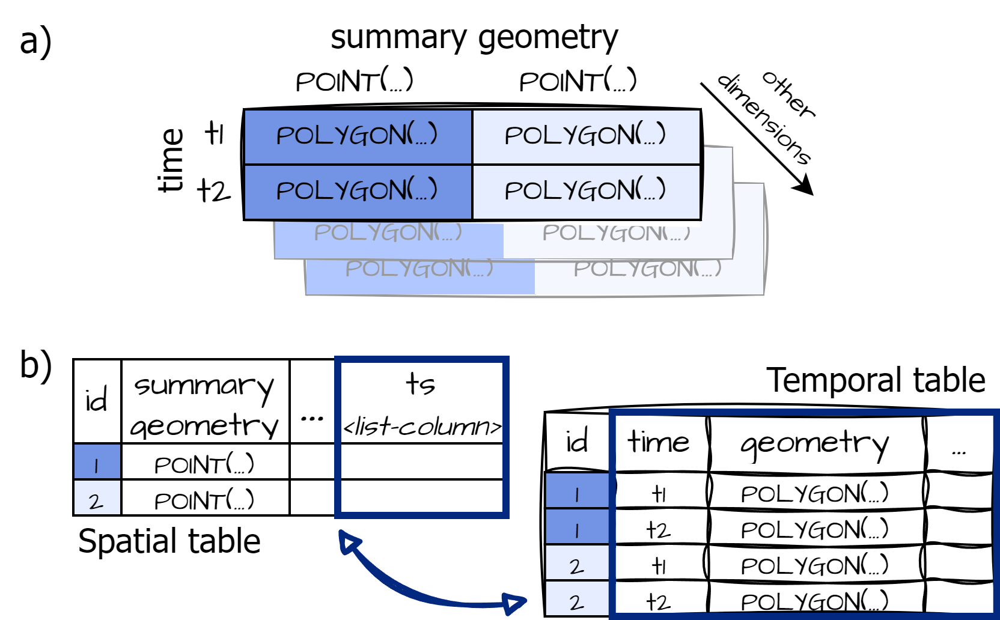
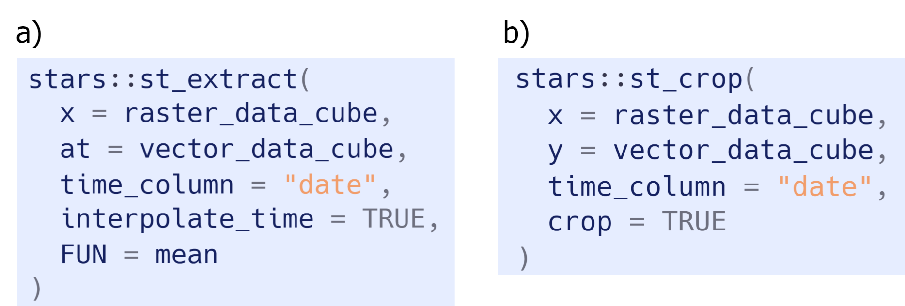
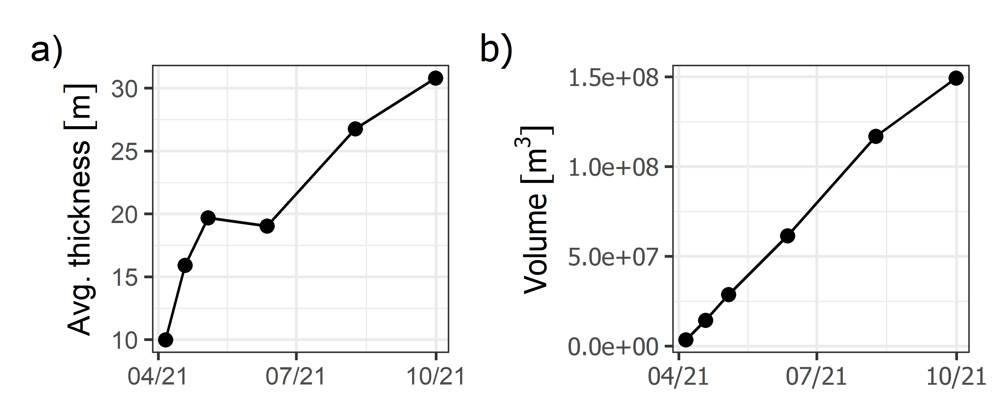

Interaction between raster and vector data cubes facilitates the spatio-temporal analysis and monitoring of landforms

Geomorphic landform monitoring with raster and vector data cubes
Lorena Abad 1, 
@loreabad6
lorena.abad@plus.ac.at
1 Department of Geoinformatics - Z_GIS, University of Salzburg, 5020 Salzburg, Austria
Introduction
Landscapes and landforms are in constant change with dynamic processes driving their evolution. Monitoring landforms related to natural hazards, like proglacial lakes, volcanic lava flows, landslides or gully erosion, is important for disaster risk prevention and mitigation. There, Earth observation (EO) data and data cubes have shown useful to study landscape dynamics.
Objectives: 1) to adapt vector data cubes to structure and analyse landforms with changing geometries and 2) to adjust spatio-temporal operations for raster-vector data cube interaction.
Challenge
- Long time series analysis at pixel locations is possible due to the gridded nature of data cubes. But, these queries ignore the spatial context. Moving from pixels to objects can improve the analysis of landscape dynamics.
- With feature extraction techniques (e.g. OBIA, deep learning, manual delineation), we can outline geomorphological features at various points in time. But, when converting from pixels to objects the query advantages of a data cube are lost.
- To represent a vector time series as a data cube, the challenge lies on the changing shapes of the features.
- As for raster-vector interactions, spatio-temporal operations, like value extraction as zonal statistics or intersection operations are not commonly implemented.
Implementation
- Vector data cubes are used to integrate geomorphological features with changing geometries as array-based and tabular formats as shown in Fig. 1.
- Spatio-temporal interactions can be implemented to extract information from the raster data cube, based on the vector data temporal dimension. Examples of how these functions would be implemented in the R package {stars} are shown in Fig. 2.

Figure 1: Array-based (a) and tabular (b) representations for vector data cubes

Figure 2: Spatio-temporal operations with the R package {stars}.
Application
Vector data cubes and their integration with raster data cubes are showcased with the Fagradalsfjall volcanic lava flow outlines from Pedersen et al. (2023). The centre figure shows a subset of lava flow outlines and elevation rasters from the study. The raster/vector integration allows extraction of zonal statistics (Fig. 3) but also spatial cropping considering the temporal dimension.

Figure 3: Time series of average thickness (a) and volume (b) of lava flows in Fagradalsfjall, Iceland.
Conclusions
Vector data cubes for features with changing geometries facilitates landform characterisation. Further, the integration of spatial and temporal properties in data cube operations can benefit various disciplines within the geosciences.
References
Pedersen GBM, Belart JMC, Óskarsson BV, et al. (2023) Digital Elevation Models, orthoimages and lava outlines of the 2021 Fagradalsfjall eruption: Results from near real-time photogrammetric monitoring. Zenodo. Available at: https://doi.org/10.5281/zenodo.7866738 .